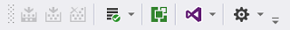
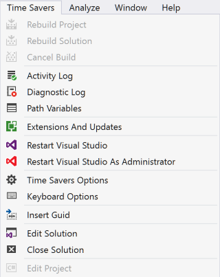
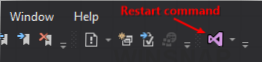
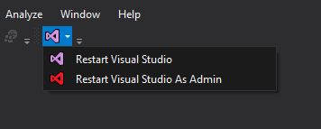
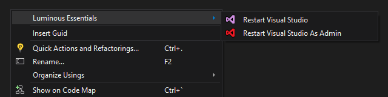

Visual Studio Extensions
Time Savers#
1076+ installs | 5-star rating | VS 2015#
A growing collection of small time-savers to enhance day-to-day productivity for developing with Visual Studio.
Reviewed by Greg Duncan in Time Savers, the Definition of a VS Extension
Listed by Dmitry Lyalin in his Top Ten Most Popular Developer Links for the Week of January 2, 2017
Installation#
Via Visual Studio Marketplace#
- download the extension here
- click the downloaded vsix file
- follow the prompts
- restart Visual Studio if it was already running
Via Extensions and Updates#
- click the Tools menu
- select Extensions and Updates
- search for 'time savers'
- select the extension from the list
- click install
Features#
- Activity Log
- Cancel Build
- Close Solution
- Diagnostic Log
- Edit Project
- Edit Solution
- Extensions and Updates
- Insert Guid(s)
- Keyboard Options
- Path Variables
- Rebuild Project
- Rebuild Solution
- Reopen Start Page
- Restart Visual Studio
- Restart Visual Studio as Administrator
Usage#
Via Time Savers Toolbar#

Via Time Savers Menu#

Download it here, or from the Visual Studio Marketplace.
Restart Visual Studio#
228+ installs | no rating#
The simplest way of restarting Visual Studio on demand (normal and elevated).
Features#
- Restart Visual Studio
- Restart Visual Studio As Admin
How To Use#
Via Time Savers Toolbar#

Via Time Saver Context Menu#

Restart Visual Studio As Admin#
How To Use#
Via Time Savers Toolbar#

Via Time Saver Context Menu#

Download it here, or from the Visual Studio Marketplace.
Insert Guid#
301+ installs | (no rating)#
The simplest and fastest way of inserting a new GUID directly into your code, without leaving the code editor.
Features#
- Insert Guid
- Insert Multuple Guids
How To Use#
Insert Guid Via Context Menu#
Insert Single Guid#

Insert Multiple Guids#

Download it here, or from the Visual Studio Marketplace.
Luminous Essentials For VS#
940+ installs | (no rating)#
A collection of essential productivity enhancements for working in Visual Studio
Please Note:#
This extension has been deprecated in favor of Time Savers (a new open-source extension with the same functionality)
View it here